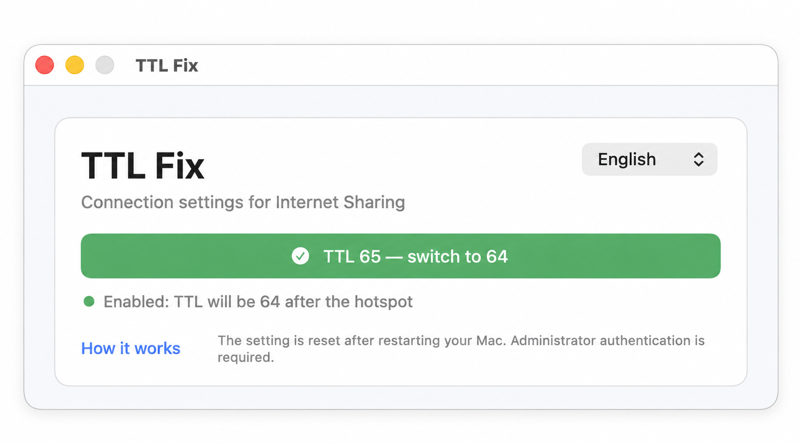

TTL Fix
Раздавайте интернет с Mac или Windows: TTL меняется одной кнопкой, а приложение показывает, получилось ли.

Как пользоваться
Нажмите большую кнопку TTL и подтвердите запрос администратора. Зелёный цвет — настройка применена, красный — отменено или произошла ошибка.
Приложение пока не подписано, поэтому при первом запуске macOS и Windows могут попросить подтверждение.